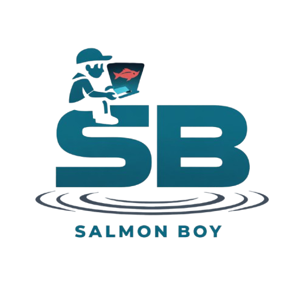

What is this map?
Real-time risk monitoring for Atlantic salmon on the Newfoundland coast using Sentinel-2 satellite imagery.
Salmon Paths:
Animated gold lines trace migration corridors through Trinity Bay, NL.
Coloured tiles:
Blue → low risk. Yellow → elevated. Red → high. Click any tile for details.